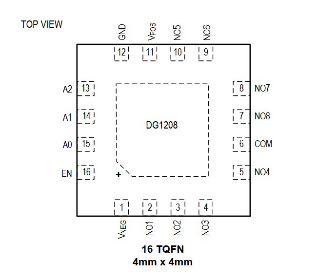
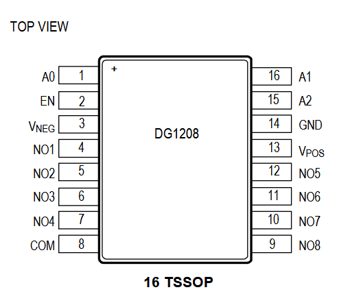
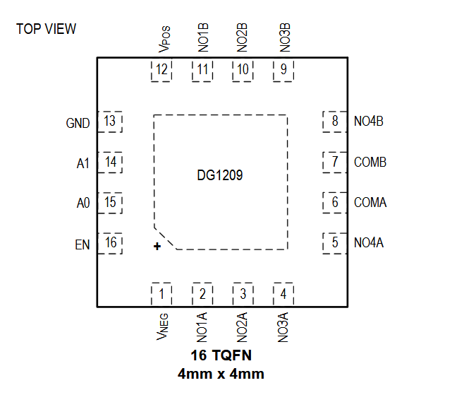
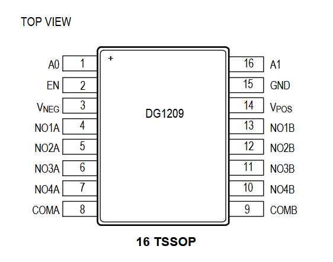

DG1208ETE+

Pin Description
| PIN | NAME | FUNCTION |
|---|---|---|
| POWER SUPPLY | ||
| 11 | VPOS | Positive Power Supply. Bypass VPOS to GND with a minimum 0.1μF ceramic capacitor as close to the pin as possible. |
| 1 | VNEG | Negative Power Supply. Bypass VNEG to GND with a minimum 0.1μF ceramic capacitor as close to the pin as possible. In single-supply applications, connect VNEG to GND. |
| 12 | GND | Logic Ground Reference |
| EP | EP | Exposed Pad. Leave unconnected. |
| DIGITAL INPUTS | ||
| 13 | A2 | Logic Address Input. See the Control Logic section for more information. |
| 14 | A1 | Logic Address Input. See the Control Logic section for more information. |
| 15 | A0 | Logic Address Input. See the Control Logic section for more information. |
| 16 | EN | Enable Input. Drive EN high to enable the multiplexer. Drive EN low to disable all switches. Do not leave EN unconnected. |
| ANALOG SWITCH | ||
| 6 | COM | Common Bidirectional Analog Signal Terminal. It can be either an input or output. |
| 7 | NO8 | Normally-Open Bidirectional Analog Signal Terminal 8. It can be either an input or output. |
| 8 | NO7 | Normally-Open Bidirectional Analog Signal Terminal 7. It can be either an input or output. |
| 9 | NO6 | Normally-Open Bidirectional Analog Signal Terminal 6. It can be either an input or output. |
| 10 | NO5 | Normally-Open Bidirectional Analog Signal Terminal 5. It can be either an input or output. |
| 5 | NO4 | Normally-Open Bidirectional Analog Signal Terminal 4. It can be either an input or output |
| 4 | NO3 | Normally-Open Bidirectional Analog Signal Terminal 3. It can be either an input or output. |
| 3 | NO2 | Normally-Open Bidirectional Analog Signal Terminal 2. It can be either an input or output. |
| 2 | NO1 | Normally-Open Bidirectional Analog Signal Terminal 1. It can be either an input or output. |
DG1208EUE+

Pin Description
| PIN | NAME | FUNCTION |
|---|---|---|
| POWER SUPPLY | ||
| 13 | VPOS | Positive Power Supply. Bypass VPOS to GND with a minimum 0.1μF ceramic capacitor as close to the pin as possible. |
| 3 | VNEG | Negative Power Supply. Bypass VNEG to GND with a minimum 0.1μF ceramic capacitor as close to the pin as possible. In single-supply applications, connect VNEG to GND. |
| 14 | GND | Logic Ground Reference |
| DIGITAL INPUTS | ||
| 15 | A2 | Logic Address Input. See the Control Logic section for more information. |
| 16 | A1 | Logic Address Input. See the Control Logic section for more information. |
| 1 | A0 | Logic Address Input. See the Control Logic section for more information. |
| 2 | EN | Enable Input. Drive EN high to enable the multiplexer. Drive EN low to disable all switches. Do not leave EN unconnected. |
| ANALOG SWITCH | ||
| 8 | COM | Common Bidirectional Analog Signal Terminal. It can be either an input or output. |
| 9 | NO8 | Normally-Open Bidirectional Analog Signal Terminal 8. It can be either an input or output. |
| 10 | NO7 | Normally-Open Bidirectional Analog Signal Terminal 7. It can be either an input or output. |
| 11 | NO6 | Normally-Open Bidirectional Analog Signal Terminal 6. It can be either an input or output. |
| 12 | NO5 | Normally-Open Bidirectional Analog Signal Terminal 5. It can be either an input or output. |
| 7 | NO4 | Normally-Open Bidirectional Analog Signal Terminal 4. It can be either an input or output |
| 6 | NO3 | Normally-Open Bidirectional Analog Signal Terminal 3. It can be either an input or output. |
| 5 | NO2 | Normally-Open Bidirectional Analog Signal Terminal 2. It can be either an input or output. |
| 4 | NO1 | Normally-Open Bidirectional Analog Signal Terminal 1. It can be either an input or output. |
DG1209ETE+

Pin Description
| PIN | NAME | FUNCTION |
|---|---|---|
| POWER SUPPLY | ||
| 12 | VPOS | Positive Power Supply. Bypass VPOS to GND with a minimum 0.1μF ceramic capacitor as close to the pin as possible. |
| 1 | VNEG | Negative Power Supply. Bypass VNEG to GND with a minimum 0.1μF ceramic capacitor as close to the pin as possible. In single-supply applications, connect VNEG to GND. |
| 13 | GND | Logic Ground Reference |
| EP | EP | Exposed Pad. Leave unconnected. |
| DIGITAL INPUTS | ||
| 14 | A1 | Logic Address Input. See the Control Logic section for more information. |
| 15 | A0 | Logic Address Input. See the Control Logic section for more information. |
| 16 | EN | Enable Input. Drive EN high to enable the multiplexer. Drive EN low to disable all switches. Do not leave EN unconnected. |
| ANALOG SWITCH | ||
| 7 | COMB | B-Side Common Bidirectional Analog Signal Terminal. It can be either an input or output. |
| 6 | COMA | A-Side Common Bidirectional Analog Signal Terminal. It can be either an input or output. |
| 8 | NO4B | B-Side Normally-Open Bidirectional Analog Signal Terminal 4. It can be either an input or output. |
| 9 | NO3B | B-Side Normally-Open Bidirectional Analog Signal Terminal 3. It can be either an input or output. |
| 10 | NO2B | B-Side Normally-Open Bidirectional Analog Signal Terminal 2. It can be either an input or output. |
| 11 | NO1B | B-Side Normally-Open Bidirectional Analog Signal Terminal 1. It can be either an input or output. |
| 12 | NO4A | A-Side Normally-Open Bidirectional Analog Signal Terminal 4. It can be either an input or output. |
| 4 | NO3A | A-Side Normally-Open Bidirectional Analog Signal Terminal 3. It can be either an input or output. |
| 3 | NO2A | A-Side Normally-Open Bidirectional Analog Signal Terminal 2. It can be either an input or output. |
| 2 | NO1A | A-Side Normally-Open Bidirectional Analog Signal Terminal 1. It can be either an input or output. |
DG1209EUE+

Pin Description
| PIN | NAME | FUNCTION |
|---|---|---|
| POWER SUPPLY | ||
| 14 | VPOS | Positive Power Supply. Bypass VPOS to GND with a minimum 0.1μF ceramic capacitor as close to the pin as possible. |
| 3 | VNEG | Negative Power Supply. Bypass VNEG to GND with a minimum 0.1μF ceramic capacitor as close to the pin as possible. In single-supply applications, connect VNEG to GND. |
| 15 | GND | Logic Ground Reference |
| DIGITAL INPUTS | ||
| 16 | A1 | Logic Address Input. See the Control Logic section for more information. |
| 1 | A0 | Logic Address Input. See the Control Logic section for more information. |
| 2 | EN | Enable Input. Drive EN high to enable the multiplexer. Drive EN low to disable all switches. Do not leave EN unconnected. |
| ANALOG SWITCH | ||
| 9 | COMB | B-Side Common Bidirectional Analog Signal Terminal. It can be either an input or output. |
| 8 | COMA | A-Side Common Bidirectional Analog Signal Terminal. It can be either an input or output. |
| 10 | NO4B | B-Side Normally-Open Bidirectional Analog Signal Terminal 4. It can be either an input or output. |
| 11 | NO3B | B-Side Normally-Open Bidirectional Analog Signal Terminal 3. It can be either an input or output. |
| 12 | NO2B | B-Side Normally-Open Bidirectional Analog Signal Terminal 2. It can be either an input or output. |
| 13 | NO1B | B-Side Normally-Open Bidirectional Analog Signal Terminal 1. It can be either an input or output. |
| 7 | NO4A | A-Side Normally-Open Bidirectional Analog Signal Terminal 4. It can be either an input or output. |
| 6 | NO3A | A-Side Normally-Open Bidirectional Analog Signal Terminal 3. It can be either an input or output. |
| 5 | NO2A | A-Side Normally-Open Bidirectional Analog Signal Terminal 2. It can be either an input or output. |
| 4 | NO1A | A-Side Normally-Open Bidirectional Analog Signal Terminal 1. It can be either an input or output. |